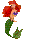
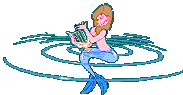

Para mi amiga
Luisa
Para mi amiga
Luisa

Érase una vez una joven feliz y bonita que iba cada día a marisquear a la playa, a la vez que cantaba alegremente al ritmo de las olas.
Pero un día la escuchó cantar una sirena que, envidiosa de su melodiosa voz, la lanzó una maldición y la convirtió en sirena y desde entonces, solo canta para prevenir a los marineros del peligro de las rocas.
Algunos juran que la han visto en la playa de Pedreña.